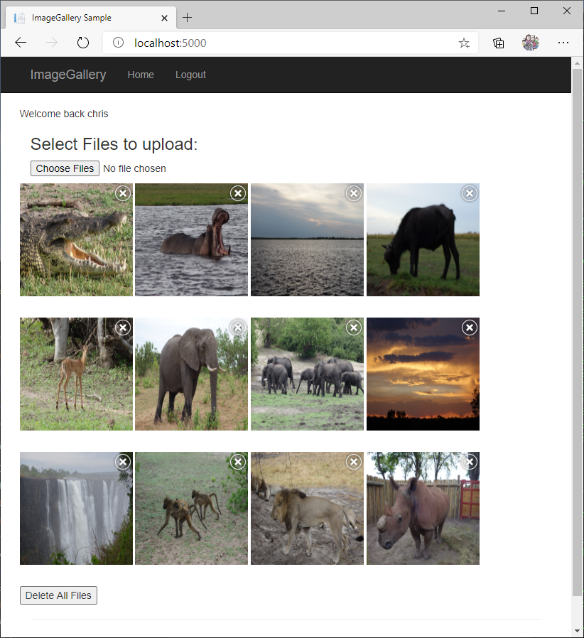

Systematically testing an ASP.NET service
This sample shows how to use Coyote to systematically test an ASP.NET service. The sample ASP.NET service included here implements a simple image gallery. Please note that this sample service contains some interesting bugs on purpose. You can run the unit tests with and without Coyote and you can run the web front end using the Azure storage emulators.

What you will need
You will also need to:
- Install Visual Studio 2022.
- Install the .NET 8.0 version of the coyote tool.
- Be familiar with the
coyotetool. See using Coyote. - Clone the Coyote git repo.
If you want to actually run the sample (rather than just running the unit tests) then you will also need the following:
- Azure Storage Emulator must be installed and running.
- Azure Cosmos Emulator must be installed and running.
- Open Azure Cosmos Data Explorer from taskbar tray and copy the
Primary Connection Stringfrom there into~/ImageGalleryAspNet/ImageGalleryService/appsettings.json.
Build the sample
After cloning the Coyote git repo run the following command:
cd Samples/WebApps/ImageGalleryAspNet/
dotnet build
Optional: deploying and running the sample locally
You do not need to do this unless you really want to, you can do all the unit testing using Coyote without running the development version of the service. But some people like to see the code running before they think about how to test it.
Once all the above prerequisites are complete (including the storage emulators) you can run this app using two separate console windows as follows:
cd ImageGalleryService
dotnet run
And in the second window:
cd ImageGallery
dotnet run
Navigate your web browser to http://localhost:5000/ and you will see the empty ImageGallery site.
Create a new test account and upload some of your favorite photos (you can do more than one at a
time) and you will see them appear. The “dotnet run” consoles will also show logging output that
shows you what is happening behind the scenes.
Sample structure
The ImageGallery.sln solution consists of five projects (all will be discussed below):
ImageGallery- this is the web front end that uses the API service.ImageGalleryService- this is the ASP.NET API service.ImageGalleryClient- a helper API for talking to the service.Tests- this contains two regular unit tests that useMSTest.Tests.Coyote- this invokes the two tests inTestswrapping them with the Coyote testing engine.TraceReplayer- makes it easy to reproduce the bugs found bycoyote test.
The Image Gallery sample service
This service is based on a 3-tier architecture: (1) a client (implemented by the unit tests and by
the ImageGallery web front end), (2) two ASP.NET API services, one for managing accounts
(AccountController) and one for managing image galleries (GalleryController) associated with
these accounts, and (3) two backend storage systems used by these API services (Cosmos DB to
store accounts, and Azure Blob Storage to store images).
The AccountController has 4 APIs to Create, Update, Get and Delete an account. Create
first checks if the account already exists, and if not it creates it in Cosmos DB. Similarly,
Update and Get first check if the account exists and, if it does, it updates it, or returns it,
accordingly. Finally, Delete first checks if the account exists, and if it does it deletes it from
Cosmos DB and then also deletes the associated image container for this account from Azure Blob
Storage.
The GalleryController is similar. It has 4 APIs: Store, Get, Delete GetList. Store
first checks if the account already exists in Cosmos DB and, if it does, it stores the image in
Azure Blob Storage. Get is simple, it checks if the image blob exists, if it it does, it returns
the image. Finally, Delete first checks if the account already exists in Cosmos DB and, if it
does, it deletes the image blob from Azure Blob Storage. GetList can be used to enumerate
the images in an account in pages.
Bugs in the service
As mentioned above, this service was designed in purpose to contain some interesting bugs to showcase systematic testing with Coyote. You can read the comments in the controllers for more details about the bugs, but briefly a lot of the above APIs have race conditions. For example, the controller checks that the account exists, and tries to update it, but another request could delete the account between those two operations, resulting in an unhandled exception, and thus a 500 internal server error, which is a bad bug. The service should never return a 500 to its users!
These kind of bugs involving race conditions between concurrent requests are hard to test. Unit tests are typically tailored to test sequential programs. Async race conditions can result in flaky tests and when you start debugging them, adding break points, and diving in, the race condition might just disappear, something known as a Heisenbug!
We wrote two unit tests (using MSTest and Microsoft.AspNetCore.Mvc.Testing) to exercise the
service and uncover bugs: TestConcurrentAccountRequests and
TestConcurrentAccountAndImageRequests. The former only tests the AccountController, while the
later tests both controllers at the same time. You can read more details in the comments for these
tests, but let us quickly summarize what these tests do and what the bugs are.
The TestConcurrentAccountRequests method initializes the mocks and injects them into the ASP.NET
service, then creates a client, which does a Create account request to create a new account for
Alice. It waits for this request to complete. It then concurrently invokes two requests: Update
account and Delete account, and waits for both to complete. These requests are now racing, and
because there is a race condition in the AccountController controller logic, the update request
can fail due to an unhandled exception (500 error code) and this failure is nondeterministic. The
issue is that the controller first checks if the account exists and, if it does, it then updates
it. But after the “does account exists check”, the delete request could run, deleting the account!
The update then tries to run which triggers the bug! Interestingly the non-coyote test run rarely
finds this bug although it is possible to see it with the ImageGallery web front end if you use
multiple browser windows and do batch upload and delete operations in each.
The TestConcurrentAccountAndImageRequests initializes the mocks and injects them into the ASP.NET
service, then creates a client, which does a Create account request to create a new account for
Alice. It waits for this request to complete. It then concurrently invokes two requests: Store
image and Delete account, and waits for both to complete. Similar to the above test, these
requests are now racing, and because there is a race condition in the controller logic, the store
request can nondeterministically store the image in an “orphan” container in Azure Storage, even
if the associated account was deleted. This is more subtle bug because the request itself is not
throwing an unhandled exception, it is just a sneaky race when trying to read/write from/to two
backend systems at the same time. This issue is also a data race and you can see the detail in the
controller logic.
Most of the bugs described in this tutorial (and in the comments in the service code) can be fixed by catching the exceptions thrown by the (mock) storage systems (or checking their returned error codes) and returning back an appropriate non-500 error code to the client. Some of the bugs might also require to implement roll back logic in the case where a request updates one or more storage accounts in a non-transactional manner, which could result in stale data being stored, even if the the request failed.
Before going further (and into Coyote), lets build and run the tests!
How to run the unit tests
Just run them from inside Visual Studio, or run the following:
cd Samples/WebApps/ImageGalleryAspNet/
dotnet test bin/net8.0/ImageGalleryTests.dll
The tests may or may not trigger the bug! Most likely you will see this output:
Total tests: 2
Passed: 2
Total time: 1.2053 Seconds
And even if you do get them to fail, if you try to debug them, the bugs may or may not manifest (as they are Heizenbugs). We surely want some better way of testing concurrent code, right?
Coyote is here to help
You can learn more about the systematic testing capabilities of Coyote here, but lets give a brief summary here to get quickly in action.
Coyote serializes the execution of a concurrent program (i.e., only executes a single task at at time). A Coyote test executes this serialized program lots of times (called testing iterations), each time exploring different interleavings in a clever manner. If a bug is found, Coyote gives a trace that allows you to deterministically reproduce the bug. You can use the VS Debugger to go over the trace as many times as required to fix the bug.
To be able to test this service, use Coyote’s binary rewriting capabilities to instrument concurrency primitives (learn more about this here). This is handled by the build script above.
How to run the Coyote systematic tests
Please do not run the MSTest from inside Visual Studio, as it will currently run the un-rewritten binaries (requires a post build task to get around this). Instead, once you build the service and the tests, run the following from the root directory of the repo:
coyote rewrite rewrite.coyote.json
dotnet test bin/coyote/ImageGalleryTests.Coyote.dll
This will rewrite the tests, and then run the tests inside the Coyote testing engine, up to 1000 iterations each, and report any found bugs. The bug should be found most of the time after just a few iterations (as they are not too deep).
Besides the error output, you should see a bug error such as:
X TestConcurrentAccountRequests [10s 407ms]
Error Message:
Assert.Fail failed. Found bug: Found unexpected error code.
Replay trace using Coyote by running:
TraceReplayer.exe TestConcurrentAccountRequests TestConcurrentAccountRequests.trace
Which also tells you how to reliably reproduce the bug using Coyote.
How to reproduce a buggy concurrent trace
As you can see above, the TestConcurrentAccountRequests failed. This bug is nondeterministic, and
if you try debug it without Coyote it might not always happen. However, Coyote gives you a reliable
repro. Right now, someone can use the replay functionality from the coyote replay tool or
programmatically through the replay API, but for the purposes of this sample there is a simple
TraceReplayer executable that takes the name of the test and the trace file produced by Coyote,
and replays it in the VS debugger. To do this, just invoke the command mentioned in the error above
(change the paths to the ones on your machine):
cd bin/coyote
TraceReplayer.exe TestConcurrentAccountRequests TestConcurrentAccountRequests.trace
You will also see that the trace output contains logs such as:
[0HM34OD7O65E5] Creating account with id '0' (name: 'alice', email: 'alice@coyote.com').
[0HM34OD7O65E5] Creating container 'Accounts' in database 'ImageGalleryDB' if it does not exist.
[0HM34OD7O65E5] Checking if item with partition key '0' and id '0' exists in container 'Accounts'.
[0HM34OD7O65E5] Creating new item with partition key '0' and id '0' in container 'Accounts'.
[0HM34OD7O65E7] Storing image with name 'beach' and account id '0'.
[0HM34OD7O65E6] Deleting account with id '0'.
[0HM34OD7O65E6] Creating container 'Accounts' in database 'ImageGalleryDB' if it does not exist.
[0HM34OD7O65E7] Creating container 'Accounts' in database 'ImageGalleryDB' if it does not exist.
[0HM34OD7O65E7] Checking if item with partition key '0' and id '0' exists in container 'Accounts'.
[0HM34OD7O65E6] Checking if item with partition key '0' and id '0' exists in container 'Accounts'.
[0HM34OD7O65E6] Deleting item with partition key '0' and id '0' in container 'Accounts'.
[0HM34OD7O65E7] Creating container 'gallery-0' if it does not exist.
[0HM34OD7O65E6] Deleting container 'gallery-0' if it exists.
[0HM34OD7O65E7] Creating blob 'beach' in container 'gallery-0'.
In the above logs, the [0HM34OD7O65E5] prefix is the HttpContext.TraceIdentifier which is a
unique id per HTTP request. This makes it easier to see how Coyote explores lots of async
interleaving during testing and debugging. In this example you can see it bouncing between 3 async
tasks [0HM34OD7O65E5], [0HM34OD7O65E6] and [0HM34OD7O65E7] and this controlled interleaving
of tasks can help find lots of bugs.
Troubleshooting
Login fails with an unhandled exception has occurred while executing the request.
Make sure the Azure storage emulators are running.
SocketException: No connection could be made because the target machine actively refused it.
Make sure the Azure storage emulators are running.
System.AggregateException: ‘Retry failed after 6 tries
Make sure the Azure storage emulators are running. Make sure you can then connect to the azure
storage emulator from the Azure storage explorer.
Summary
In this tutorial you learned:
- How to mock external systems like Azure Cosmos DB and Azure Storage for systematic testing.
- How to use the
coyote rewritecommand line to rewrite an ASP.NET service with task-based concurrency for systematic testing with Coyote. - How to run a systematic test of unmodified code with Coyote inside an MSTest.
- How to replay a buggy trace of unmodified code with Coyote.
Happy debugging!